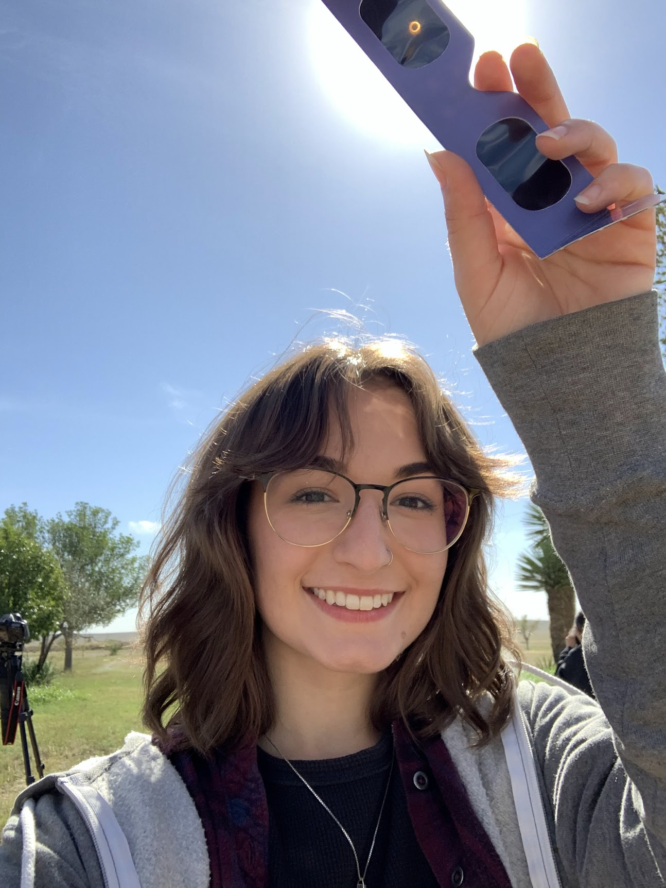

About Me

Hello, all! I'm Maria Pudoka and I am currently a 6th year graduate student at the University of Arizona where I've been fortunate to work closely with a large international collaboration. My research generally involves the spatial distribution of galaxies and dark matter in the early Universe along with the how the properties of these galaxies depend on the environments in which they live. I specifically observe galaxies around quasars at z~6-7 just a few million years after the Big Bang.
I received my undergraduate degree in Astronomy/Astrophysics from The Ohio State University and my Master of Science from the University of Arizona. As an undergraduate, I explored the relationship between stellar rotation and stellar age, a field known as gyrochronology. Though I currently live in Arizona and love the mountaints, my heart is always in Ohio, Go Bucks!
Through my education, I have developed a deep appreciation for careful data handling and clear communication which I believe can drive innovation for astronomy and beyond. I aspire to work at the intersection of science and people. For me, this takes three forms. The first I described above is intent: I want to do work that creates value for people and companies while causing no harm. The second is about input: I believe human creativity and diverse perspectives are what push science beyond what purely technical thinking can achieve alone. The third is about exchange: I think a genuine dialogue between scientists and the public is how we build a world with greater scientific literacy.
With this in mind, some things I like to do outside of research and science are crafts like paper machet, crocheting, sewing, and just about any other sculptural DIY you can think of; thrift shopping; reading a cozy fantasy or intense horror book (I recognize the intense difference between these two genres); and trying out new recipes. Some of my interests include Critical Role, history documentaries (especially about the Medieval Period), K-pop, and watching video essays about a broad range of topics.